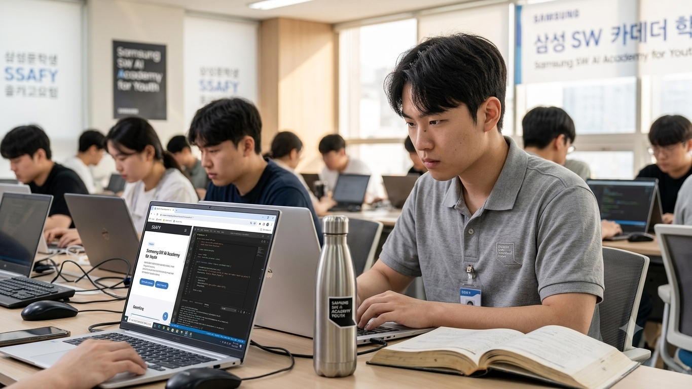

REAL-TIME STATE
현재 나의 스포츠 주파수
지금 이 순간, 필드 밖을 서성이는 팬의 솔직한 고백입니다.

Busy but Focused
SSAFY 몰두 중에도
CURRENT PULSE
SSAFY 몰두 중에도
타오르는 마음
현재 고도의 집중과 노력이 필요한 SSAFY 교육 훈련 기간으로 인해, 새벽 생중계를 빠짐없이 사수하기에는 다소 체력적 제약이 따르는 상황입니다.
하지만 경기 하이라이트를 부지런히 챙겨 보고, 리더십과 전술의 움직임을 포착하려는 탐구열만큼은 결코 멈추지 않고 있습니다.
THE GREATEST OF ALL TIME
“현재 나의 모든 심장박동은 아르헨티나의 축구 영웅이자 우주 역사상 최고의 선수, 리오넬 메시를 향해 찬사를 보냅니다.”
- SSAFY 스포츠 팬의 진심 어린 주관 -
2026 WORLD CUP
월드컵 토너먼트 승부예측
나만의 우승 후보를 직접 선택하세요. 투표 현황이 다이내믹하게 즉각 계산됩니다.
프랑스 50%
스페인 50%
잉글랜드 50%
아르헨티나 50%